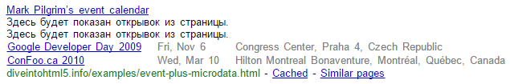

Разметка мероприятий
Всякое случается. Некоторые вещи происходят в заранее определённое время. Было бы неплохо, если бы вы могли сказать поисковым системам, когда именно что-то должно произойти? Есть же угловые скобки для этого.
Для начала взглянем на график расписания моих выступлений.
<article>
<h1>Google Developer Day 2009</h1>
<img width="300" height="200"
src="http://diveintohtml5.info/examples/gdd-2009-prague-pilgrim.jpg"
alt="[Mark Pilgrim at podium]">
<p>
Google Developer Days are a chance to learn about Google
developer products from the engineers who built them. This
one-day conference includes seminars and “office hours”
on web technologies like Google Maps, OpenSocial, Android,
AJAX APIs, Chrome, and Google Web Toolkit.
</p>
<p>
<time datetime="2009-11-06T08:30+01:00">2009 November 6, 8:30</time>
–
<time datetime="2009-11-06T20:30+01:00">20:30</time>
</p>
<p>
Congress Center<br>
5th května 65<br>
140 21 Praha 4<br>
Czech Republic
</p>
<p><a href="http://code.google.com/intl/cs/events/developerday/2009/home.html">GDD/Prague home page</a></p>
</article>Вся информация о мероприятии содержится в элементе <article>, куда мы должны вставить атрибуты itemtype и itemscope.
<article itemscope itemtype="http://data-vocabulary.org/Event">Ссылка ведёт на словарь Event по адресу http://data-vocabulary.org/Event, который также содержит маленькую диаграмму с описанием свойств словаря. И что это за свойства?
| Свойство | Описание |
|---|---|
| name | Название мероприятия. |
| url | Ссылка на страницу с подробностями о мероприятии. |
| location | Местоположение или место проведения мероприятия. |
| description | Описание мероприятия. |
| startDate | Дата и время начала мероприятия в формате даты ISO. |
| endDate | Дата и время окончания мероприятия в формате даты ISO. |
| duration | Категория мероприятия (например, «концерт» или «лекция»). Это произвольная строка, а не перечисляемый атрибут. |
| eventType | Продолжительность в формате ISO. |
| geo | Географические координаты местоположения. Всегда содержат два подсвойства: latitude и longitude. |
| photo | Ссылка на фото или изображение, связанное с мероприятием. |
Название мероприятия это элемент <h1>. В соответствии с моделью микроданных HTML5, элементы <h1> не имеют специальной обработки. Значение свойства микроданных это просто текстовое содержание элемента <h1>. Всё что мы должны сделать, это добавить атрибут itemprop и указать что этот <h1> содержит название мероприятия.
<h1 itemprop="name">Google Developer Day 2009</h1>Говоря простым языком: «Названием этого мероприятия является Google Developer Day 2009».
Список мероприятий содержит фотографию, которая может быть отмечена свойством photo. Как и следовало ожидать, фотография уже добавлена с помощью элемента <img>. Как и со свойством photo из словаря Person фотография в Event это URL. Поскольку модель микроданных HTML5 говорит, что значением свойства элемента <img> выступает атрибут src, то нам надо только добавить атрибут itemprop в <img>.
<img itemprop="photo" width="300" height="200"
src="http://diveintohtml5.info/examples/gdd-2009-prague-pilgrim.jpg"
alt="[Mark Pilgrim at podium]">Простым языком говорится: «фото для этого мероприятия находится по адресу http://diveintohtml5.info/examples/gdd-2009-prague-pilgrim.jpg».
Далее идёт длинное описание события, которое представляет собой абзац свободного текста.
<p itemprop="description">Google Developer Days are a chance to
learn about Google developer products from the engineers who built
them. This one-day conference includes seminars and “office
hours” on web technologies like Google Maps, OpenSocial,
Android, AJAX APIs, Chrome, and Google Web Toolkit.</p>Следующий кусок это что-то новое. Мероприятия, как правило, приходятся на конкретные даты начала и окончания и начинаются в определённое время. В HTML5 дата и время должны быть размечены элементом <time> и мы уже это сделали. Тогда поднимается вопрос, как добавить свойства микроданных к этим элементам <time>? Оглядываясь назад, на модель микроданных HTML5, мы видим, что <time> имеет специальную обработку. Значением свойства микроданных элемента <time> выступает значение атрибута datetime. И эй, свойства startDate и endDate словаря Event принимают дату в формате ISO, такое же, как у datetime. Ещё раз, семантика основного словаря HTML красиво сочетается с семантикой нашего пользовательского словаря микроданных. Разметка даты начала и окончания с микроданными просто делается так:
- в первую очередь используем правильно HTML (с помощью элемента <time>, чтобы разметить дату и время);
- добавляем единственный атрибут itemprop.
<p>
<time itemprop="startDate" datetime="2009-11-06T08:30+01:00">2009 November 6, 8:30</time>
–
<time itemprop="endDate" datetime="2009-11-06T20:30+01:00">20:30</time>
</p>Простым языком говорится: «Это мероприятие начинается 6 ноября 2009 года, в 8:30 утра и продлится до 6 ноября 2009, 20:30 (время местное в Праге, GMT+1)».
Следующим идёт свойство location. Определение словаря Event говорит, что это может быть либо организация, либо адрес. В нашем случае мероприятие проводится в месте, которое специализируется на конференциях, Конгресс-центр в Праге. Разметка в виде словаря Organization позволяет включить нам название места как его адрес.
Для начала, давайте объявим, что <р>, содержащий адрес — это свойство location словаря Event и что этот элемент является отдельным пунктом микроданных, который соответствует словарю http://data-vocabulary.org/Organization.
<p itemprop="location" itemscope
itemtype="http://data-vocabulary.org/Organization">Далее, пометим название организации, обернув её название фиктивным элементом <span> и добавив к нему атрибут itemprop.
<span itemprop="name">Congress Center</span><br>Согласно правилам области видимости микроданных, itemprop="name" определено как свойство словаря Organization, а не словаря Event. Элемент <p> определяет начало области видимости свойств организации, пока он не закрыт тегом </p>. Любые свойства микроданных мы определяем как свойства последнего словаря. Вложенные словари подобны стекам. Мы ещё не завершили стек, так что всё еще говорим о свойствах Organization.
На самом деле мы собираемся добавить в стек третий словарь: Address для Organization для Event.
<span itemprop="address" itemscope
itemtype="http://data-vocabulary.org/Address">Ещё раз, мы хотим пометить каждую часть адреса в качестве отдельного свойства микроданных, так что нам нужна уйма фиктивных элементов <span>, чтобы повесить на них атрибуты itemprop. Если я двигаюсь для вас слишком быстро, то вернитесь назад и прочитайте о разметке адресов людей и организаций.
<span itemprop="street-address">5th května 65</span><br>
<span itemprop="postal-code">140 21</span>
<span itemprop="locality">Praha 4</span><br>
<span itemprop="country-name">Czech Republic</span>В словаре Address больше нет свойств, поэтому мы закрываем <span>, c которого началась область видимости Address.
</span>В словаре Organization больше нет свойств, поэтому мы закрываем элемент <p>, c которого началась область видимости Organization.
</p>Теперь мы вернулись к определению свойств в Event. Следующее свойство geo, в котором хранится физическое местоположение словаря Event. При этом используется тот же словарь Geo, который мы применяли для разметки местоположения организации в предыдущем разделе. Нам нужен элемент <span> в качестве контейнера, он получает атрибуты itemtype и itemscope. Внутри <span> нам понадобится два элемента <meta>, один для широты, а второй для долготы.
<span itemprop="geo" itemscope itemtype="http://data-vocabulary.org/Geo">
<meta itemprop="latitude" content="50.047893">
<meta itemprop="longitude" content="14.4491">
</span>Закрыв <span>, содержащий свойства Geo, мы, таким образом, опять возвращаемся к определению свойств Event. Последнее свойство — это url и оно должно быть знакомо. Связывание URL с событием работает так же, как связывание URL с человеком и с организацией. Если вы правильно используете HTML (маркируете ссылками с <a href>), то установить, что ссылка является свойством url просто — достаточно добавить атрибут itemprop.
<p>
<a itemprop="url"
href="http://code.google.com/intl/cs/events/developerday/2009/home.html">
GDD/Prague home page
</a>
</p>
</article>Страница с примером также содержит второе мероприятие, в котором я участвовал как спикер — конференция ConFoo в Монреале. Для краткости я не собираюсь разбирать разметку строка за строкой. Это по существу то же самое, что и мероприятие в Праге: пункт Event с вложенными пунктами Geo и Address. Я просто упомянул это в связи с заявлением, что одна страница может содержать несколько мероприятий, каждое со своими микроданными.
Вернёмся к Google Rich Snippets
Согласно инструменту для проверки Google Rich Snippets вот информация, которую сканер Google собирает с нашей страницы с примером мероприятия.
Event 1 name: Google Developer Day 2009 photo: http://www.example.com/gdd-2009-prague-pilgrim.jpg description: Google Developer Days are a chance to learn about Google developer products from the engineers who built them. This one-day conference includes seminars and “office hours” on web technologies like Google Maps, OpenSocial, Android, AJAX APIs, Chrome, and Google Web Toolkit. startDate: 2009-11-06T08:30:00+01:00 endDate: 2009-11-06T20:30:00+01:00 url: http://code.google.com/intl/cs/events/developerday/2009/home.html location [Organization]: name: Congress Center address [Address]: street-address: 5th května 65 postal-code: 140 21 locality: Praha 4 country-name: Czech Republic geo [Geo]: latitude: 50.047893 longitude: 14.4491
Вот как Google может представить нашу страницу в результатах поиска. Опять же, я должен сделать оговорку, что это только пример. Google может изменить формат поисковой выдачи в любой момент и нет никакой гарантии, что Google вообще обратит внимание на ваши микроданные. Сожалею что это звучит как испорченная пластинка, но наши юристы заставили меня сказать об этом.

После заголовка страницы и автоматически созданного отрывка текста, Google начинает использовать разметку микроданных, которую мы добавили на страницу для отображения списка мероприятий. Обратите внимание на формат даты: «Fri, Nov 6». Это не та строка, которая представлена где-либо в нашем HTML или микроданных. Мы использовали две строки, полностью соответствующие формату ISO — 2009-11-06T08:30+01:00 и 2009-11-06T20:30+01:00. Google взял эти две даты, выяснил, что они были в один день и решил показать одну дату в более удобном формате.
Теперь посмотрим на физические адреса. Google выбрал для отображения только место встречи плюс город и страну, но не улицу. Это стало возможным благодаря тому, что мы разбили адрес на пять подсвойств — name, street-address, region, locality и country-name — и разметили каждую часть адреса как отдельное свойство микроданных. Google воспользовался этим преимуществом и показал сокращённый адрес. Другие потребители микроданных могут сделать различные варианты что и как отображать. Здесь нет правильного или неверного варианта. Это вам следует предоставить как можно больше данных и как можно более точных. А остальной мир будет их интерпретировать.